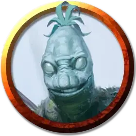

Вегепигмей падальщик
Vegepygmy Scavenger
Маленькое Растение, нейтральное

Класс Доспеха 13 (природный доспех)
Хиты 13 (3к6 + 3)
Скорость 30 футов
| мод | спас | ||
|---|---|---|---|
| СИЛ | 7 | −2 | −2 |
| ЛОВ | 14 | +2 | +2 |
| ТЕЛ | 13 | +1 | +1 |
| мод | спас | ||
|---|---|---|---|
| ИНТ | 6 | −2 | −2 |
| МДР | 11 | +0 | +0 |
| ХАР | 7 | −2 | −2 |
Навыки Восприятие +2, Ловкость рук +4, Скрытность +4
Сопротивление урону электричество; колющий
Чувства тёмное зрение 60 футов, пассивное Восприятие 12
Языки Язык Вегепигмеев
Опасность 1/4 (50 опыта)
Бонус мастерства +2
Особенности
Растительный камуфляж. Вегепигмей совершает проверки Ловкости (Скрытность) с преимуществом, если он находится в любой достаточно укрытой растительностью местности.
Регенерация. Вегепигмей восстанавливает 3 хитов в начале своего хода. Если он получает урон холодом, огнем или некротической энергией, то эта черта не работает в начале следующего хода вегепигмея. Он умирает только если начинает ход с 0 хитов и не может регенерировать.
Действия
Коготь. . Рукопашная атака оружием: +4 к попаданию, досягаемость 5 фт., одна цель. Попадание: 5 (1к6 + 2) рубящего урона.
Праща. . Дальнобойная атака оружием: +4 к попаданию, дистанция 30/120 футов, одна цель. Попадание: 4 (1к4 + 2) дробящего урона
Бонусные действия
Ловкий побег. Вегепигмей совершает действие Отход или Засада.
Описание
Вегепигмеи, также называемые плесневелым народцем, — это грибные существа, которые появляются из тел Гуманоидов или Великанов, убитых красно-коричневой плесенью — ядовитым грибком, который, по слухам, прибыл со звезд.
Вегепигмеи расселяются маленькими группками, общаясь при помощи свиста, жестов и ритмичных постукиваний по телу. Хотя вегепигмеи и могут обеспечивать себя питательными веществами из почвы и прочей органики, они предпочитают плотоядную диету, которая достигается за счет охоты и сбора падали. Вегепигмеи могут существовать вечно, пока климат остается благоприятным для их грибных тел.
Обратитесь к книге «Морденкайнен представляет: Монстры мультивселенной, чтобы узнать больше о вегепигмеях.
Вегепигмей падальщик
Вегепигмеи полагаются на падальщиков в вопросах подножного сбора из окружения. Вегепигмеи падальщики пользуются своей незаметностью для того, чтобы добывать еду, инструменты и оружие, принося их в колонию. Они достигают успехов с помощью своей ловкости и природного камуфляжа, ускользая от врагов и забрасывая их снарядами из пращей из-под прикрытия листвы.